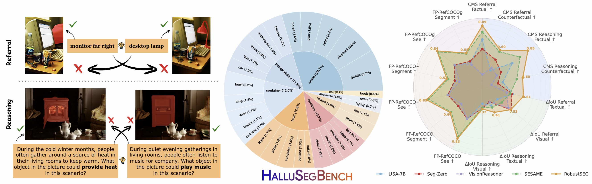
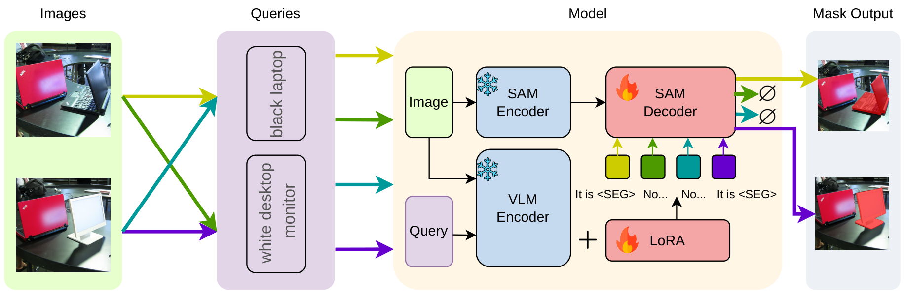
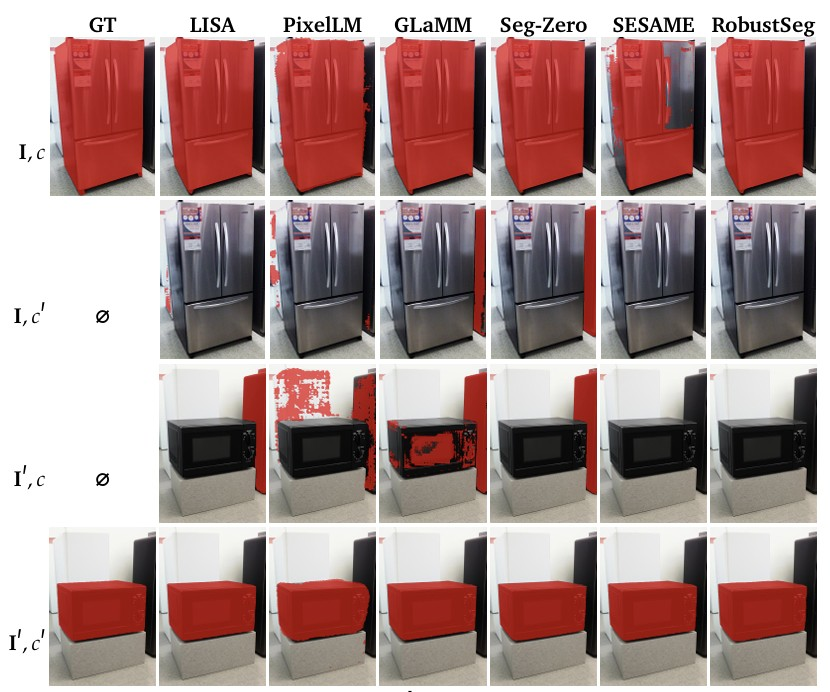
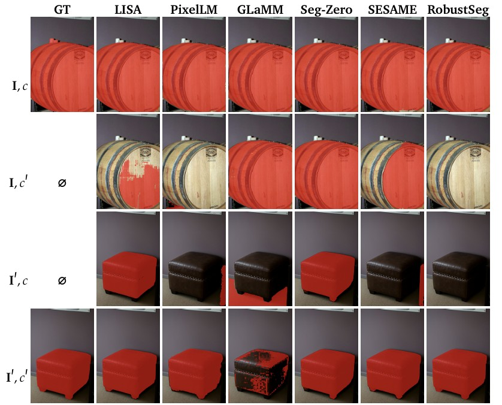

Textual ΔIoU ↑
Change the query, keep the imageThe gap between factual IoU and mask overlap under a query-only change measures whether the model distinguishes a present object from an absent one named in the same scene.
We introduce RobustSeg, a segmentation vision-language model trained on factual and counterfactual image pairs to ground masks in visual evidence and abstain when the queried object is absent. Our Counterfactual Segmentation Reasoning task and HalluSegBench benchmark test this distinction and measure the severity of hallucinated masks. Counterfactual fine-tuning reduces hallucinations by 30% while preserving segmentation fidelity.

Paired factual and counterfactual examples test segmentation and abstention. The benchmark spans diverse objects and compares RobustSeg with existing segmentation models.
Segmentation Vision-Language Models (VLMs) have significantly advanced grounded visual understanding, yet they remain prone to pixel-grounding hallucinations, producing masks for incorrect objects or for objects that are entirely absent. Existing evaluations rely almost entirely on text- or label-based perturbations, which check only whether the predicted mask matches the queried label. Such evaluations overlook the spatial footprint and severity of hallucination and therefore fail to reveal vision-driven hallucinations, which are more challenging and more prevalent. To address this gap, we formalize the task of Counterfactual Segmentation Reasoning (CSR) where a model must segment the referenced object in the factual image and abstain in its counterfactual counterpart. To support this task, we curate HalluSegBench the first large-scale benchmark to diagnose referring and reasoning expression segmentation hallucinations using controlled visual counterfactuals, alongside new evaluation metrics that measure hallucination severity and disentangle vision- and language-driven failure modes. We further introduce RobustSeg a segmentation VLM trained with counterfactual fine-tuning (CFT) to learn when to segment and when to abstain. Experimental results confirm RobustSeg reduces hallucinations by 30%, while improving segmentation performance on FP-RefCOCO(+/g).
RobustSeg learns when a requested object has visual support. Counterfactual fine-tuning uses both present-object examples, which require a mask, and absent-object examples, which require abstention. Frozen vision and language encoders feed a trainable segmentation decoder and language adapters.

HalluSegBench tests referring expressions and reasoning questions on paired factual and counterfactual images. Controlled object replacements preserve the scene context while changing whether the queried object is present, exposing masks generated from contextual expectations instead of visual evidence.
Changing the image or the expression independently tests whether the mask follows the evidence. Both matching pairs require segmentation. Each mismatched pair requires abstention.
| Image | Query | Expected response |
|---|---|---|
| Factual | Original object | Segment |
| Factual | Replacement object | Abstain |
| Counterfactual | Original object | Abstain |
| Counterfactual | Replacement object | Segment |
The benchmark includes 2,812 referring-expression pairs and 861 reasoning pairs. The training split contains 1,934 pairs and the test split contains 1,739.
Factual IoU measures mask quality when the object is present. The new metrics test whether the model changes its prediction when the evidence changes and how severe an unsupported mask is.
The gap between factual IoU and mask overlap under a query-only change measures whether the model distinguishes a present object from an absent one named in the same scene.
The corresponding gap after replacing the queried object measures whether the mask responds to visual evidence rather than following the unchanged language prompt.
CMS penalizes overlap with the replacement object and leakage into other regions, normalized by the reference object area. Lower scores mean less hallucination. Abstaining on an absent object gives zero.
Comparison of Reasoning Segmentation Models on HalluSegBench Metrics, including textual and visual IoU drop for referral and reasoning tasks (ΔIoU Referral, ΔIoU Reasoning),
factual and counterfactual Confusion Mask Score ( CMS).
| Model | HM | CMS Referral · Factual ↓ | CMS Referral · Counterfactual ↓ | CMS Reasoning · Factual ↓ | CMS Reasoning · Counterfactual ↓ | ΔIoU Referral · Textual ↑ | ΔIoU Referral · Visual ↑ | ΔIoU Reasoning · Textual ↑ | ΔIoU Reasoning · Visual ↑ |
|---|---|---|---|---|---|---|---|---|---|
| LISA-7B | No | 0.3080 | 0.7317 | 0.4438 | 0.6960 | 0.4534 | 0.2810 | 0.2991 | 0.2418 |
| PixelLM-7B | No | 0.4748 | 0.7286 | 0.4284 | 0.5824 | 0.3952 | 0.4071 | 0.2792 | 0.2263 |
| GLaMM-7B | No | 0.4196 | 0.6052 | 0.3556 | 0.4022 | 0.3273 | 0.3016 | 0.2446 | 0.3164 |
| LISA-13B | No | 0.3194 | 0.6687 | 0.4979 | 0.6647 | 0.4591 | 0.3886 | 0.3430 | 0.3164 |
| PixelLM-13B | No | 0.4306 | 0.7253 | 0.4267 | 0.5424 | 0.4285 | 0.4273 | 0.3106 | 0.3079 |
| Seg-Zero | Yes | 0.4482 | 0.5598 | 0.6554 | 0.7671 | 0.4412 | 0.5312 | 0.2391 | 0.3042 |
| VisionReasoner | Yes | 0.8191 | 0.6908 | 0.7315 | 0.8633 | 0.3619 | 0.4822 | 0.2464 | 0.3075 |
| SESAME-7B | Yes | 0.1983 | 0.4304 | 0.2998 | 0.4873 | 0.4180 | 0.3605 | 0.3296 | 0.3000 |
| RobustSeg (Ours) | Yes | 0.1062 | 0.4049 | 0.1541 | 0.3988 | 0.6105 | 0.5278 | 0.4085 | 0.3184 |
RobustSeg demonstrates hallucination mitigation capabilities compared with other reasoning-based segmentation models. We present qualitative examples that illustrate the predictions of benchmarked models across the four query-image combinations in both referral and reasoning tasks, along with the corresponding ground truth mask.

Here, c = “giant refrigerator” and c′ = “microwave oven”.

Here, c = “Where in the picture would be suitable for storing wine?” and c′ = “Where in the picture would be suitablefor resting one's feet?”.
@inproceedings{li2025hallusegbench,
title={Counterfactual Segmentation Reasoning: Diagnosing and Mitigating Pixel-Grounding Hallucination},
author={Li, Xinzhuo and Juvekar, Adheesh and Zhang, Jiaxun and Liu, Xingyou and Wahed, Muntasir and Nguyen, Kiet A. and Shen, Yifan and Yu, Tianjiao and Lourentzou, Ismini},
booktitle={IEEE/CVF Conference on Computer Vision and Pattern Recognition (CVPR Findings)},
year={2026}
}This site is built upon the work of Nerfies, made available under the Creative Commons Attribution-ShareAlike 4.0 International License. We gratefully acknowledge LISA, GLaMM, PixelLM, Seg-Zero, VisionReasoner, and SESAME for open-sourcing their models.